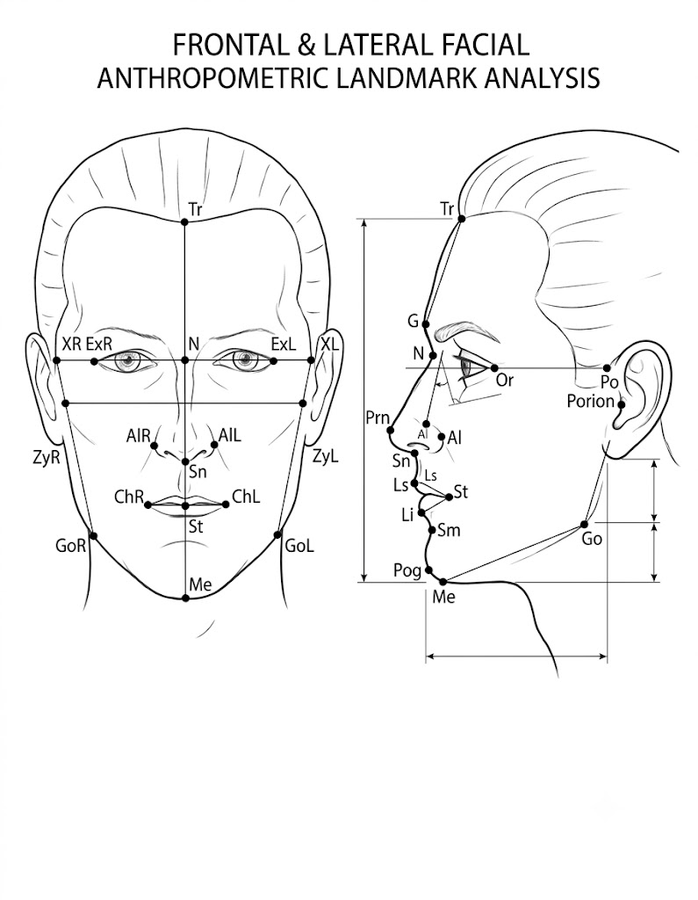

Checking your session…
Lower Third
Calculator
Home
Privacy Policy
EN
/
AR
JPG · PNG · HEIC
Change Photo
Continue →
Next step goes here
Step 2 · Landmarks
Confirm The Landmarks

Fine
Normal
Coarse
← Back
Confirm Landmarks →